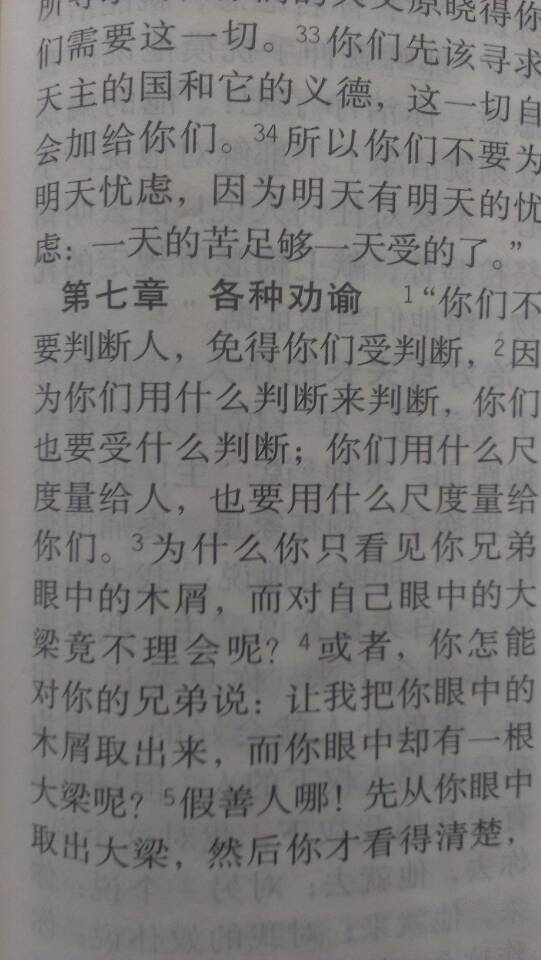

Conversation with 81184027 at Sun 11 May 2014 02:26:28 PM CST on 154115835 (webqq)
(02:26:35 PM) 哈喽: @永生之福 永生之福(710103680) 2014/5/11 12:59:01
惊人的数字：纽约，人口1800万，GDP26000亿美元，市领导6人；东京，人口1300万，GDP11000亿美元，市领导7人； 铁岭，人口300万，GDP46亿美元，市领导41名：市委书记副书记2名，常委11名，市政府市长副市长10名、市长助理3名，人大主任副主任8名，政协主席副主席9名，市政府副秘书长20名
你是怎么知道的，你移动去美国吧，你移民去日本吧，不要在中国待下去了，尽会发一些煽动性言论，其实就是个白痴。
(02:26:35 PM) 哈喽: @永生之福 永生之福(710103680) 2014/5/11 12:59:01
惊人的数字：纽约，人口1800万，GDP26000亿美元，市领导6人；东京，人口1300万，GDP11000亿美元，市领导7人； 铁岭，人口300万，GDP46亿美元，市领导41名：市委书记副书记2名，常委11名，市政府市长副市长10名、市长助理3名，人大主任副主任8名，政协主席副主席9名，市政府副秘书长20名
你是怎么知道的，你移动去美国吧，你移民去日本吧，不要在中国待下去了，尽会发一些煽动性言论，其实就是个白痴。
(05/11/2014 01:33:20 PM) 永生之福: 【你不关心政治，政治就不会关心你】政治不是政客的尔虞我诈，政治是每一个公民呼吸的空气、喝的水是否有毒，是否病有所医、是否老有所养！政治是要知道纳税人的钱是怎么被"公仆"使用的、公仆们是否守法为主人服务的！如果有人告诉你：政治只是政治家的事。你如果信以为真，其实你就放弃了做人的权利！
(02:58:45 PM) 永生之福: 不服，可以问政府。
(02:59:07 PM) 哈喽: 你就像个疯子样，一天骂政府，有意思吗？
(02:59:46 PM) 哈喽: 不是不服，而是你尽做些没有意义的事情，你尽做一些于国于家没有任何有益的事情，
(03:00:24 PM) 永生之福: 国家做对我有益的事了吗？
(03:01:41 PM) 哈喽: 国家生你养你，还不够吗，你想想伊拉克阿富汗索马里就应该知足了，人心不足蛇吞象，你还想把政府推翻重新来组建吗？如果说你现在在你眼里所谓的政府是一个火炕，那么一个新政府出现一定是更大的火炕。
(03:04:02 PM) 永生之福: 生我养我的是父母。国家就是一个机器。
(03:04:26 PM) 永生之福: 不合格的机器，需要改装。
(03:05:11 PM) 哈喽: 反动派，你就是个反动派，目光短浅，还处于本位思想上。
(03:05:27 PM) 哈喽: 可惜中国养你这么多年
(03:05:43 PM) 永生之福: 反动派？！:D
(03:06:05 PM) 蔚蓝的天空: 一切反动派都是纸老虎
(03:06:08 PM) 哈喽: 你心底想对当前政府开刀，难道还不是反动派？
(03:06:17 PM) 永生之福: 我属动力派。
(03:06:20 PM) 哈喽: @永生之福 纸老虎
(03:06:20 PM) 永生之福: :D
(03:06:41 PM) 永生之福: 你才是反动派！:D
(03:07:05 PM) 那么空。: 信耶稣的不是说神生你养你？
(03:07:28 PM) 永生之福: 瞎子带帽子。瞎扣帽子。
(03:08:13 PM) 永生之福: 神叫你们瞎了心眼。
(03:08:37 PM) 哈喽: 被西方邪恶势力所控制，你自己还不知情，还以为你自己多高大上呢？还以为主耶稣恩典无穷尽呢？你是虔诚的信徒，可惜却被别人所利用。
(03:08:43 PM) 永生之福: :左太极:愿神医治你们。
(03:09:17 PM) 永生之福: 我只为正义呼喊。:左太极:
(03:09:27 PM) 永生之福: 错的，需要改正。
(03:09:32 PM) 明月几时有: 信主的应该不会这么恶毒
(03:09:36 PM) 蔚蓝的天空: 那里有压迫 哪里就有反抗
(03:09:38 PM) 哈喽: 但你为什么就是不改正
(03:09:49 PM) 永生之福: 我怎么错了？
(03:10:08 PM) 永生之福: 你才是反动派。我怎么错了？
(03:10:08 PM) 蔚蓝的天空: 宗教信仰都是扯淡
(03:10:21 PM) 明月几时有: 政府成本各个国家都差不多
(03:10:28 PM) 蔚蓝的天空: 无神论 唯物主义才是正道
(03:10:29 PM) 哈喽: 错在眼光短浅却不学习，错在没有深刻认识和理解圣经。
(03:10:30 PM) 永生之福: 生命在于运动。这话没听过？
(03:10:34 PM) 明月几时有: 不要道听途说
(03:10:41 PM) 哈喽: @蔚蓝的天空 +1
(03:11:18 PM) 明月几时有: 宗教为政权服务
(03:11:30 PM) 明月几时有: 每个国家都是的
(03:11:33 PM) 永生之福: 政权为人民服务。
(03:11:57 PM) 明月几时有: 我国的就是这样
(03:12:08 PM) 哈喽: 我不反对任何宗教信仰，反而对有宗教信仰的人很尊敬，因为他们知道为了什么而活着，不管他们以什么之名。但是，离经叛道，把信仰作为斗争力量，那就要不得了，这样的人，这样的人群，要坚决打击。
(03:12:31 PM) 明月几时有: 宗教说政府坏话就是邪教
(03:13:23 PM) 那么空。: 宗教不应该反对别的派别
(03:13:31 PM) 哈喽: 邪教特点之一，就是仇恨社会，仇恨政府。
(03:13:33 PM) 永生之福: 宗教里面的人不是人民？
(03:13:58 PM) 哈喽: 宗教里面的人是不是人民？疯狗里面的狗算不算狗？
(03:14:08 PM) 明月几时有: 真正有宗教信仰的是为了修心修德
(03:14:11 PM) 哈喽: 不好意思，打错了。邪教、
(03:14:20 PM) 那么空。: 神经病是不是人？
(03:14:20 PM) 哈喽: @明月几时有 再次+1.
(03:14:29 PM) 哈喽: 修心修德
(03:14:44 PM) 醒悟: 算狗，疯狗也是狗
(03:14:49 PM) 永生之福: 站在人民对立面的政府，就魔鬼。
(03:15:20 PM) lost message from #95617 to #95617
(03:15:24 PM) 明月几时有: 乱发牢骚，目光短浅
(03:15:24 PM) 哈喽: 嗯，疯狗也算狗。邪教的人也算是人民。既然是人民，那么政府就给了他空间，但他们却在这个空间里面作乱，所以该死。
(03:15:26 PM) 那么空。: 你在这里面怎么没点反省
(03:15:29 PM) 蔚蓝的天空: 你好
(03:15:46 PM) 永生之福: 你父母疯了，就不是父母了？中国人真愚蠢。
(03:16:24 PM) 哈喽: @永生之福 刚刚给你说了，政府好心给你们改错的机会，你不珍惜，还要作乱。
(03:16:26 PM) 明月几时有: 你自己不自信，没人会看得起你
(03:16:32 PM) 醒悟: 外国人没疯子
(03:17:09 PM) 明月几时有: 连国都不要了，活着就没意义
(03:17:12 PM) 永生之福: 政府是我父母吗？
(03:17:33 PM) 哈喽: 政府把你当女儿，你却不孝顺
(03:17:33 PM) 明月几时有: 比你父母更亲
(03:17:50 PM) 醒悟: 常出国的人都知道在国外中国人的地位比以前高了
(03:17:51 PM) 永生之福: 有叫孩子上税的父母吗？
(03:18:06 PM) 永生之福: 高个P
(03:18:12 PM) 明月几时有: 没有国那有家
(03:18:34 PM) 醒悟: 圣经让人上交十分一财产
(03:18:35 PM) 哈喽: @永生之福 打死你
(03:18:36 PM) 明月几时有: 国外税收更高
(03:18:48 PM) 哈喽: 一看你就是反动派
(03:18:51 PM) 明月几时有: 这是做人的义务
(03:19:10 PM) 那么空。: 没政府你活什么
(03:19:12 PM) 永生之福: 一提中国，就提毒牛奶，糟糕的质量。
(03:19:16 PM) 明月几时有: 不要和他说
(03:19:30 PM) 明月几时有: 你最多小学文化
(03:19:34 PM) 那么空。: 这是政府害得？不是个人奸商？
(03:19:35 PM) 永生之福: 我不生在中国，我就活不下去了？
(03:19:41 PM) 醒悟: 我爸因为工作常出国出差!他说地位高多了
(03:19:47 PM) 哈喽: @永生之福 一提西方，你就想给别人舔屁股。说别人那里好，这里好，可别人只给你一个邪教组织之外什么也没给你。
(03:19:57 PM) 明月几时有: 你这种人在哪都没人看得起
(03:20:24 PM) 那么空。: 就像生你父母一样，你没父母也可以活
(03:20:27 PM) 永生之福: 不需要傻子看我。
(03:20:30 PM) 明月几时有: 大家别理他了
(03:20:42 PM) 哈喽: 你自己是傻子，你自己却还不知道。
(03:20:44 PM) 明月几时有: 他没人格
(03:20:52 PM) 那么空。: 生在中国却卖国
(03:20:58 PM) 永生之福: 不需要傻子拍我
(03:20:59 PM) 醒悟: 那不是政府干的毒奶粉，地沟油是坏人干的
(03:21:10 PM) 明月几时有: 不配和我们说话
(03:21:45 PM) lost message from #95656 to #95657
(03:21:29 PM) 永生之福: 不需要傻子理我。
(03:21:29 PM) 哈喽: @永生之福 你需要“傻子”拍你
(03:21:24 PM) 那么空。: 你害人跟政府有关吗
(03:21:42 PM) 那么空。: 难道你做坏事是国家干的？
(03:21:51 PM) 哈喽: 你只需要主耶稣，可是你真正信仰的却不是真正的主耶稣。
(03:22:02 PM) 永生之福: 傻子都离开我吧。阿门
(03:22:06 PM) 哈喽: @永生之福 不如你去信佛教也好啊
(03:22:11 PM) 明月几时有: 不管你信的啥，你的结果是下地狱
(03:22:12 PM) 哈喽: 穆斯林也可以
(03:22:31 PM) 哈喽: +14
(03:22:32 PM) 永生之福: 佛教已经被基督教定位邪教。
(03:22:33 PM) 哈喽: +1
(03:22:47 PM) 醒悟: 圣经上说要顺服政府!你信全能神的吧
(03:22:52 PM) 那么空。: 基督教真是邪教了
(03:22:56 PM) 永生之福: 穆斯林教已经被基督教定为邪教。
(03:23:03 PM) 哈喽: 基督教越来越邪了
(03:23:19 PM) 那么空。: 你信多久了？
(03:23:27 PM) 那么空。: 是不是一生下来就学这个？
(03:23:31 PM) 永生之福: 马列已经被基督教定为邪教。
(03:23:38 PM) 永生之福: :D
(03:23:47 PM) 那么空。: 全能神没救了
(03:23:51 PM) 永生之福: 你定我也可以定。
(03:23:53 PM) 醒悟: 他不是基督教!全能教的
(03:24:13 PM) 那么空。: 基督教不是这个内容
(03:24:38 PM) 永生之福: 打着国家的幌子定无辜人的罪。可耻。
(03:25:26 PM) 醒悟: :D牢里关着的多是好人?
(03:25:29 PM) 那么空。: 你不必在中国
(03:25:48 PM) 永生之福: 感谢主耶稣，我已经不在中国了。
(03:25:54 PM) 哈喽: @永生之福 你打着耶稣的幌子给其他宗教帖个邪教的牌子，可耻。
(03:26:03 PM) 永生之福: 那是个人间地狱。
(03:26:05 PM) 哈喽: 哈哈，早该滚出中国了。
(03:26:08 PM) 那么空。: 污染基督教
(03:26:11 PM) 永生之福: :D
(03:26:37 PM) 永生之福: 你们就在留在地狱里吧。
(03:26:48 PM) 永生之福: 你们就永远留在地狱里吧。
(03:26:57 PM) 那么空。: 我们活得自由
(03:27:01 PM) 哈喽: 恭喜你进入了天堂
(03:27:11 PM) 永生之福: 空气指数世界最差。
(03:27:38 PM) 醒悟: 地狱没了祖国的人就像没了家的狗
(03:27:38 PM) 永生之福: 饮用水质量世界最差。
(03:27:44 PM) 哈喽: 你在国外闻个屁都是香的
(03:27:41 PM) 光: “自证预言”的是与非
2010年09月18日 05:53北京青年报【大 中 小】 【打印】 共有评论1条
人总是对未来怀有好奇、期待、焦虑或恐惧的情绪，当某种情绪积累到一定程度，往往就会产生对未来的预言。一般而言，预言或者会成功，或者会失败，至于到底会出现哪一种结果，与预言本身没有直接的关系。有意思的是，历史和现实中出现过许多“自证预言”的情况，似乎是预言本身产生了神奇的力量，推动甚至主导着事态向预言的方向发展，最终预言的结果得到证实。
“自证预言”（self-fulfilling prophecy）是美国社会学家罗伯特·默顿提出的概念，是指一个先入为主的判断，无论它的科学性和准确性如何，都会直接或间接地影响人们的认知和行为，最后使这个判断从预言变成了现实。最典型的例子是，一家银行本来经营正常，业绩良好，但社会上传言该银行经营不善，已经濒临破产，于是众多储户争先恐后排队提款，银行一时间无法应付庞大的提款队伍，最后真的就宣告破产了。
“自证预言”并非暗中发力的神秘咒语，它之所以能从预言变成现实，并不是一个“自动生成”的过程，而是因为预言作为一种信息，对人们的认知和行为产生了实际影响，人们的认知和行为又对事态发展产生了实际影响，最终促成了预言的实现。所以，问题的关键在于，人们接收到预言信息之后，在认知和行为上会产生什么影响，影响不同，事态发展的结果也会有所不同，并不是所有的预言都会“自证”实现。
对未来的预言有乐观的指向，也有不乐观的指向。除了那种对问题和危险视而不见的盲目乐观，乐观的预言一般会对人们的认知和行为产生积极的影响，这种情况比较常见，也容易理解。更复杂的情况是，在作出不乐观的预言之后，人们的认知会受到什么样的影响，会采取什么样的举措？
面对不乐观的预言，人们的正常反应应该是，如何采取有力有效的举措，最大限度避免不乐观预言成为现实，避免出现不乐观预言指向的负面的甚至灾难性的后果。如果通过人们的努力，最终避免了负面的、灾难性的后果，那就不是“自证预言”，而是“自毁预言”。“自毁预言”也是罗伯特·默顿提出的概念，在他看来，之所以会出现“自毁预言”的情况，主要是因为人们具有较强的反思能力，不是被动地接受预言信息的影响和主导，而是将预言信息变成了影响具体情境的新因素，从而改变了事态的发展过程，最终导致预言失败。比如，2000年以来，一位很有声望的学者依据多方面的信息，经过认真研究，多次预言“台海发生军事冲突不会晚于2008年”。结果，他的这个不乐观的预言“幸未言中”，不失为一件好事。
另一种情况是，一些人虽然也在采取措施，努力避免不乐观预言成为现实，但正如电影《功夫熊猫》中乌龟大师所言，“欲避之，反迎之”，主观上努力避免预言应验，客观上却促成了预言的实现。这方面的典型例子，是一些地方对“维稳”问题高度警惕，唯恐社会上一有风吹草动，就会严重危害乃至破坏稳定，“稳定可能遭破坏”成了一个极端敏感的不乐观预言。为了维护稳定，避免稳定遭到破坏，有关方面又是部署“信访专班”，对上访群众极尽布防监控围追堵截之能事，又是蓄意隐瞒食品安全事故信息和环境污染事故信息，还动用政法力量打压公民的批评和监督。他们以为这些就是“维稳”的关键，却不知“防民之口甚于防川”，这些举措或许有助于维护一时一地之“苟安”，实际上却可能成为社会稳定的最大杀手。
对于一些地方的“稳定可能遭破坏”预言未能避免“自证”的结局，“维稳”的努力最终导致了“危稳”的后果，我们不但要反思这一预言本身的科学性（对“维稳”是否存在认识误区，是否夸大了“维稳”问题的严重性），更要反思诸多“维稳”举措的正当性与合法性。对于那些“维稳”不足“危稳”有余之人，必须依法追究责任，以避免给稳定带来更大的危害。
(03:27:54 PM) 那么空。: 虽然中国很多不足，但是别的国家难道没有不足？
(03:27:51 PM) 光: http://news.ifeng.com/opinion/society/detail_2010_09/18/2548997_0.shtml
(03:28:05 PM) lost message from #95699 to #95703
(03:28:11 PM) 永生之福: 国外的月亮，都圆多了。:D
(03:28:18 PM) 醒悟: 在别人的国家，你永远抬不起头
(03:28:41 PM) 光: 一些人虽然也在采取措施，努力避免不乐观预言成为现实，但正如电影《功夫熊猫》中乌龟大师所言，“欲避之，反迎之”，主观上努力避免预言应验，客观上却促成了预言的实现。
(03:29:33 PM) 哈喽: @永生之福 你是国外反华势力无形之中变成的走狗，却不自知，何其可怜。
(03:29:44 PM) 福建-福州&水浒: @永生之福 身为基督徒，你偏激了
(03:29:44 PM) 永生之福: 走自己的路，叫傻子说吧。
(03:29:44 PM) 那么空。: 就你？自己母亲都不人，你信的什么东西
(03:30:13 PM) 哈喽: @永生之福 你岂止是偏激啊。。。
(03:30:47 PM) 醒悟: 中国人不好!他妈爱吃西洋吊
(03:31:49 PM) 永生之福: 看看你周围，有一个好人吗？
(03:32:11 PM) 哈喽: 我看了下，只有你一个人是好人了
(03:32:11 PM) 那么空。: 亲人
(03:32:34 PM) 哈喽: 我们都是罪人啊，我悔过我悔过，我愿跟着主耶稣走，我忏悔啊，求你带我走吧
(03:32:42 PM) 永生之福: 看看你周围，有一个讲公平、正义的没有？
(03:33:10 PM) 哈喽: 我们太邪恶了，我们没有一点儿公平，我们还处于封建社会，等级森严啊，唉，可怜我一下
(03:33:20 PM) 哈喽: 没有正义了，我们全部都是邪恶的人
(03:33:21 PM) 福建-福州&水浒: @永生之福
(03:33:31 PM) 福建-福州&水浒: 你觉得你现在这样对吗？
(03:33:38 PM) lost message from #95722 to #95722
(03:33:44 PM) 福建-福州&水浒: @永生之福
(03:33:32 PM) 福建-福州&水浒: 
(03:34:02 PM) 永生之福: 既然没有，就该悔改，信耶稣。
(03:34:20 PM) 永生之福: 心碎乌托邦，你觉得你现在这样对吗？
(03:34:38 PM) 那么空。: 你这叫信耶稣？
(03:34:53 PM) 哈喽: 他这叫耶稣的绊脚石
(03:35:02 PM) 永生之福: 我信耶稣，我就进入天堂。
(03:35:05 PM) 那么空。: 污染耶稣
(03:35:14 PM) 永生之福: 你不信，就永远留在地狱。
(03:35:16 PM) 那么空。: 你进过？
(03:35:29 PM) 醒悟: 你澡堂洗洗干净
(03:35:31 PM) 永生之福: 感谢主。我已经在天堂了。
(03:35:40 PM) 那么空。: 为什么那么多人比你过的好？
(03:35:53 PM) 光:
http://v.youku.com/v_show/id_XNTYwNjQ0ODg4.html
(03:36:05 PM) 光: 吸引力法则
(03:36:11 PM) 哈喽: @永生之福 天堂有没有回锅肉啊？
(03:36:09 PM) lost message from #95737 to #95737
(03:36:14 PM) 永生之福: 我感觉幸福。他们幸福我也替他们高兴。
(03:36:42 PM) 永生之福: 我在天堂，你们就嫉妒吗？
(03:37:08 PM) 永生之福: 天堂里只有爱。
(03:37:54 PM) 永生之福: 天堂里，弟兄姐妹都彼此相爱。
(03:37:55 PM) 福建-福州&水浒: 你在这里论断人，别人在论断你，有意义？这是罪！
(03:38:22 PM) 永生之福: 心碎乌托邦，你到底是哪边的？
(03:38:36 PM) 永生之福: 你还活在罪里吗？
(03:39:06 PM) lost message from #95745 to #95745
(03:39:08 PM) 永生之福: 你们应该感谢神差遣我来这里。
(03:38:44 PM) 那么空。: 回你天堂吧
(03:39:32 PM) 永生之福: 我从天堂来。拯救在地狱里的人。
(03:39:42 PM) 醒悟: 神经病!开头一个字神
(03:40:06 PM) 醒悟: 天堂来的是死人
(03:40:10 PM) 永生之福: 不信的，本来就不属神。
(03:40:22 PM) 那么空。: 我们活的很好，就是被你们这些狗弄得不好
(03:40:32 PM) 永生之福: 真好吗？
(03:40:36 PM) 永生之福: 那么空？
(03:40:42 PM) 永生之福: :D
(03:40:47 PM) 福建-福州&水浒: 我也是有宗教信仰的，我可以用我的学识反对全能神，让亲人脱离，但是我也可以反基督教，但是我内心是尊重基督教，宗教间应该互相尊重而不是互，同理人物人之间也是如此
(03:41:00 PM) 那么空。: 不是被你们这些狗弄的能不好？
(03:41:01 PM) 醒悟: 有吃有喝有的玩
(03:41:33 PM) 福建-福州&水浒: 基督信仰是仁爱，你觉得自己是否偏离爱人的基本呢
(03:41:36 PM) 永生之福: 有吃有喝有的玩--猪也是这样。
(03:41:38 PM) 福建-福州&水浒: @永生之福
(03:41:42 PM) 醒悟: 他不是基督教的
(03:41:51 PM) 那么空。: 全能的
(03:42:00 PM) 醒悟: 恩
(03:42:31 PM) 福建-福州&水浒: 感谢主。我已经在天堂了。
(03:42:47 PM) 福建-福州&水浒: 这句话偏离基督教信仰了
(03:42:49 PM) 永生之福: 阿门
(03:42:58 PM) 醒悟: 基督教有教条顺服自己的国家
(03:43:01 PM) 福建-福州&水浒: 学歪了
(03:43:29 PM) 永生之福: 你继续心碎乌托邦:D
(03:43:52 PM) 福建-福州&水浒: 继续:O？
(03:44:14 PM) 永生之福: 25:8-9 耶和华是良善正直的。所以他必指示罪人走正路。他必按公平引领谦卑人，将他的道教训他们。
(03:55:06 PM) The account has disconnected and you are no longer in this chat. You will automatically rejoin the chat when the account reconnects.